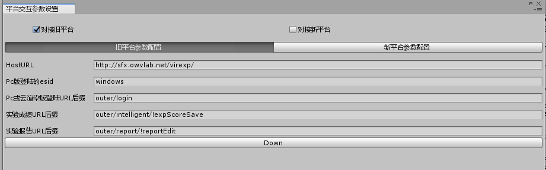
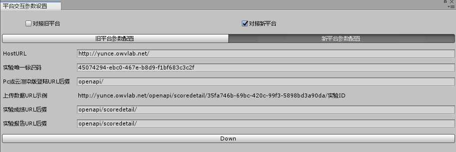
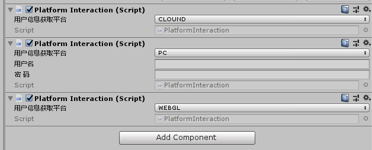
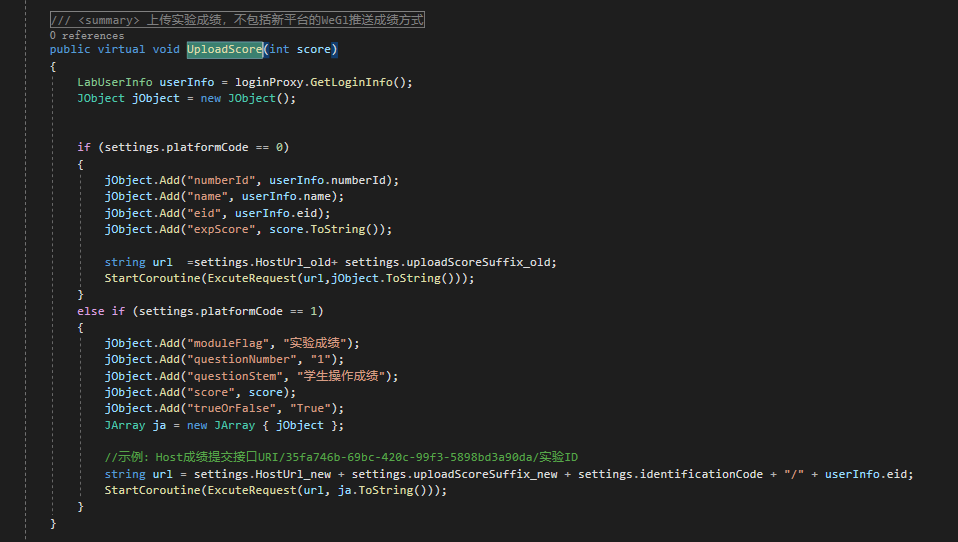
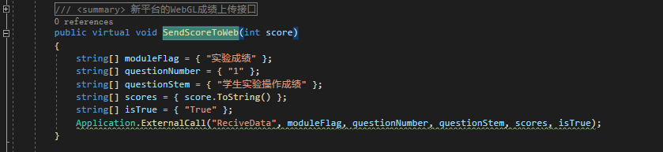

内容概要
平台对接的文件夹名为OwvlabInteraction，基于BVRP3.0基础框架内容实现，包含了pc、webgl、云平台三种平台获取实验当前登录的用户信息的方式，
并提供了统一的实验内容上传接口，由PlatformInteraction来处理完成，具体的流程如下图示：

参数配置
- 旧平台：根据中文提示 填充对应的URL,如果是采用PC版本，则需要自定义esid,需注意URL之间的斜杠符号.

- 新平台：按照中文提示填写对应的URL，实验唯一标识码可在平台的实验资源中查看，新平台的成绩和报告URL后缀是通过登录来获取，默认是不变的，所以直接在配置中给出。

应用方式
脚本挂载
挂载PlatformInteraction脚本或者是继承自PlatformInteraction的子类，选择相应的平台，如果是pc版，则填写相应的用户名和密码。具体如下图所示，使用时挂载一个即可，在程序运行开始，会自动登录获取相应的用户信息

成绩上传
成绩上传包含三个平台。根据网络平台的不同，具体的操作方式也有不相同的地方。
旧平台
说明
旧平台，不论是webgl、pc、还是云平台，在获取到用户登录信息之后，都是通过Http请求的方式，上传数据
调用
上传成绩可直接调用PlatformInteraction类中的成员函数UploadScore,参数为实验成绩，一般为int型

新平台
- 说明
新平台，也称简易平台。如果发布的平台是WebGL版本，需要根据网络平台给出的参考文档和文件，修改发布后的index文件，以及放置提供的文件到对应的位置。具体操作流程，参考对应的网络平台提供的操作文档
如果是pc（暂未使用过）和云平台，则依旧按照Http的方式。
- 调用
WebGL：直接调用PlatformInteraction类中的成员函数SendScoreToWeb,参数为实验成绩，一般为int型

Pc和云平台：直接调用前面提到的UploadScore方法。
实验报告上传
- 说明
由于实验报告上传内容各不相同，所以需要自行编写上传的实验数据。数据编写完成后，直接利用PlatformInteraction类中提供的ExcuteRequest方法提交数据即可
注意事项
- 接口引用
建议直接继承PlatformInteraction类，并重新实现对应的实验报告上传，等内容。然后作为全局单例引用
- 用户信息
当程序初始化完成，成功获取用户信息后，会作为静态变量userInfo存储在PlatformLoginProxy中，可直接使用。
- 定义回调函数
在PlatformInteraction类提供了空的回调方法 LoginCallBack，具体的内容，程序员可根据情况不同，自定义。